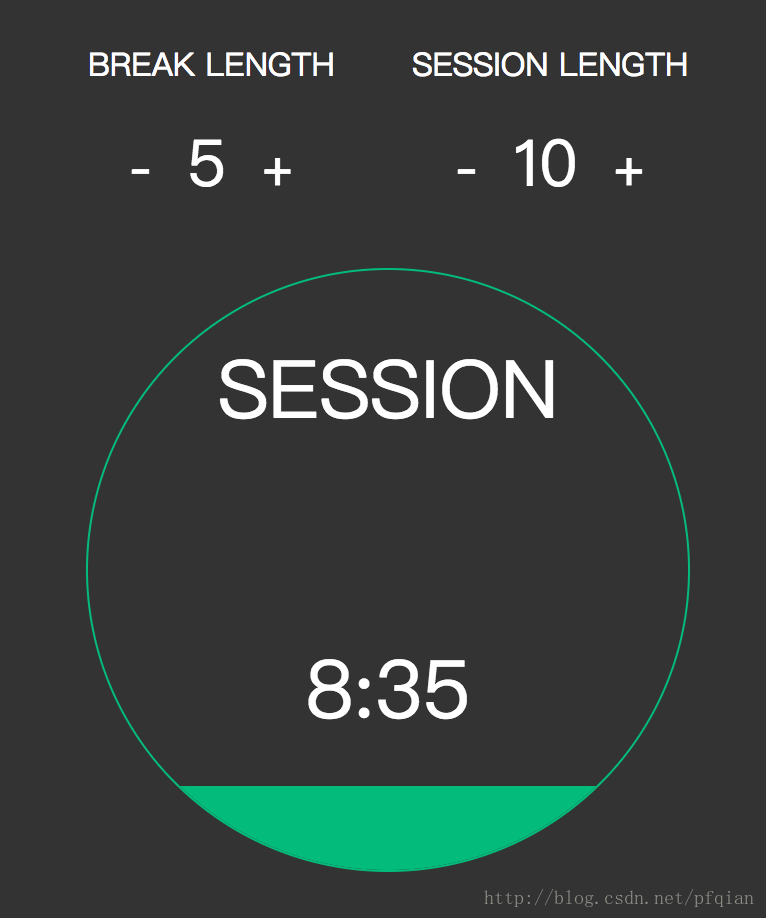
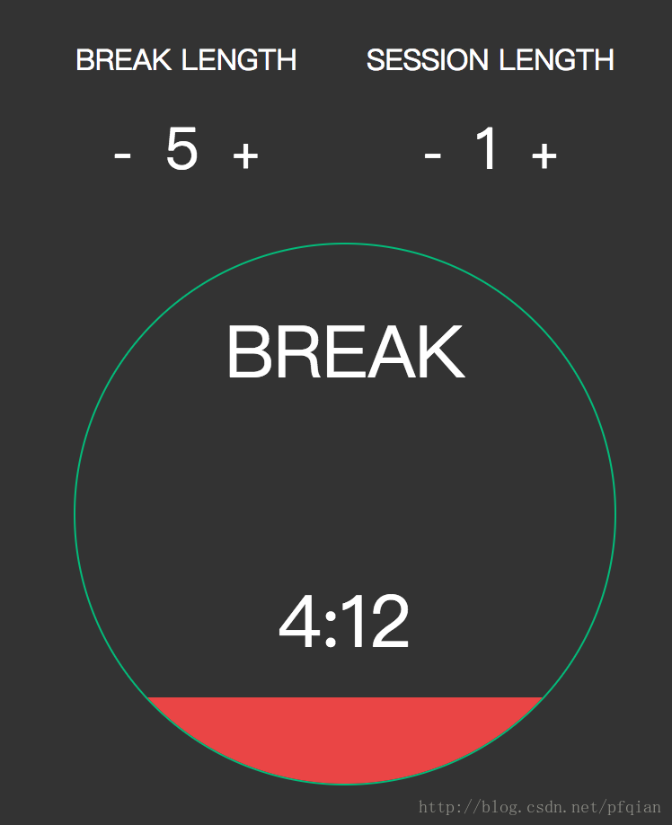

最终效果图如下所示：
 这个番茄钟主要的功能有三个：
修改时间的部分比较简单，只是需要注意一点就是在时间为1分钟的时候不能让时间继续减少了， 所以在time===1时将"-"这个button设置为disabled
if(breakTime === 1){
$("#break-minus").prop("disabled");
}
接下来就是倒计时的panel编写了，这个panel主要有以下几个功能：
timer的启动与暂停实现：
let counting = false;//whether counting down
let type = "session";//counting type
$(".timer").click(function(event){
let $target = $(event.target);
if($target.is("p")){
//TODO start/stop the timer
var timer = {
start: function(){
counting = true;
$(".control button").attr("disabled","true");//disable all buttons
interval_id = setInterval(function(){
countDown(type);
},1000);
},
stop: function(){
counting = false;
$(".control button").removeAttr("disabled");//remove
clearInterval(interval_id);
}
};
if(!counting){
timer.start();
}else {
timer.stop();
}
}
});
倒计时函数的实现：
function countDown(t){
//TODO count down,when time === 0,toggle
if(t === "session"){
//TODO count down session time
if(countSession > 0){
countSession--;
let minute = Math.floor(countSession/60);
let second = Math.floor(countSession%60);
if(second < 10){
second = "0" + second;
}
$type.text("SESSION");
$time.text(minute + ":" + second);
let fillHeight = (1-countSession/sessionTime/60) * 100 + "%";
let fillColor = "#03bb7a";
$(".fill").css({
height : fillHeight,
background : fillColor
});
}else {
//TODO reset session time and setup break time
countSession = sessionTime * 60;
type = "break";
$(".fill").css({
height: 0,
background: "transparent"
});
let minute = Math.floor(countBreak/60);
let second = Math.floor(countBreak%60);
if(second < 10){
second = "0" + second;
}
$type.text("BREAK");
$time.text(minute + ":" + second);
}
}else if (t === "break"){
//TODO count down break time
if(countBreak > 0){
countBreak--;
let minute = Math.floor(countBreak/60);
let second = Math.floor(countBreak%60);
if(second < 10){
second = "0" + second;
}
$type.text("BREAK");
$time.text(minute + ":" + second);
let fillHeight = (1-countBreak/breakTime/60) * 100 + "%";
let fillColor = "#ea4545";
$(".fill").css({
height : fillHeight,
background : fillColor
});
}else {
//TODO reset break time and setup session time
countBreak = breakTime * 60;
type = "session";
$(".fill").css({
height: 0,
background: "transparent"
});
let minute = Math.floor(countSession/60);
let second = Math.floor(countSession%60);
if(second < 10){
second = "0" + second;
}
$type.text("SESSION");
$time.text(minute + ":" + second);
}
}
}
最后就是注水标签span的css设置了，随着span标签高度的增加，我们看到的将是一个矩形框似的增长 需要将span放在timer的后面，并且将溢出隐藏起来，实现代码：
.timer {
margin: 30px auto;
border: 1px solid #03bb7a;
border-radius: 50%;
width: 300px;
height: 300px;
position: relative;
overflow: hidden;
z-index: 1;
}
.timer .fill {
position: absolute;
bottom: 0;
left: 0;
right: 0;
z-index: -1;
}
这样一个简单的基于网页的番茄钟app就实现了